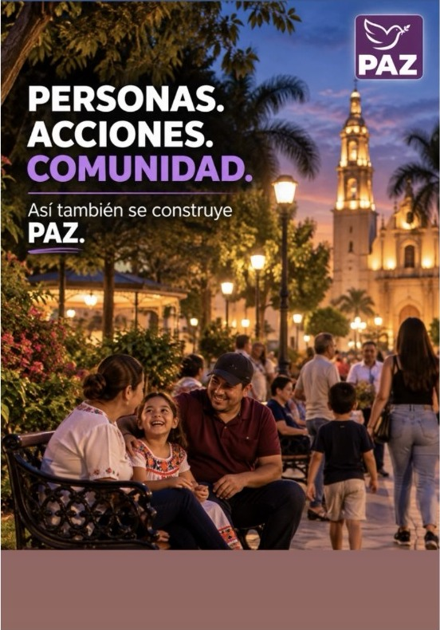
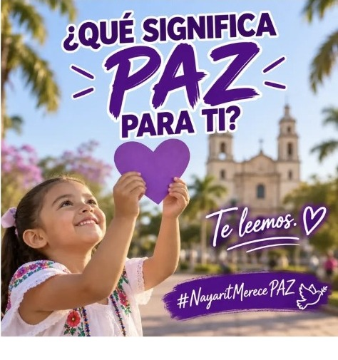
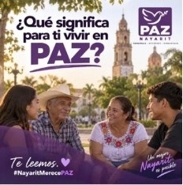

PAZ Nayarit
Una presencia visual propia, sin perder la identidad institucional.
Una propuesta ciudadana con presencia en Nayarit para escuchar, dialogar, organizar y construir soluciones desde nuestras comunidades.

Una presencia visual propia, sin perder la identidad institucional.
Contenido y participación desde todo el estado.
Escuchar, organizar y construir juntos.
El morado sigue siendo el eje institucional, pero esta propuesta suma tonos cálidos y frescos inspirados en la comunidad, el paisaje y la energía de Nayarit.
Un diseño más editorial, luminoso y dinámico: morado como base, coral como acento humano, amarillo como energía y turquesa como equilibrio visual.
Abrir espacios para conocer las necesidades, ideas y propuestas de la ciudadanía.
Impulsar actividades y mecanismos de colaboración desde cada municipio.
Convertir el diálogo y la organización en acciones cercanas que fortalezcan el tejido social. México merece PAZ.
Una sección con estilo de revista digital para que las publicaciones de Nayarit tengan mayor presencia visual y no se sientan como simples tarjetas repetidas.

Un espacio para escuchar a las familias y conocer qué significa la paz desde la experiencia cotidiana de las comunidades.
#NayaritMerecePAZ
La participación empieza en lo local: escuchar, encontrarnos y trabajar juntos.
Información, agenda y presencia territorial en un mismo espacio digital.
El portal queda preparado para organizar noticias, enlaces, eventos y participación de manera territorial.
Conoce las actividades de PAZ Nayarit, comparte tus ideas y ponte en contacto con el Comité Directivo Estatal.